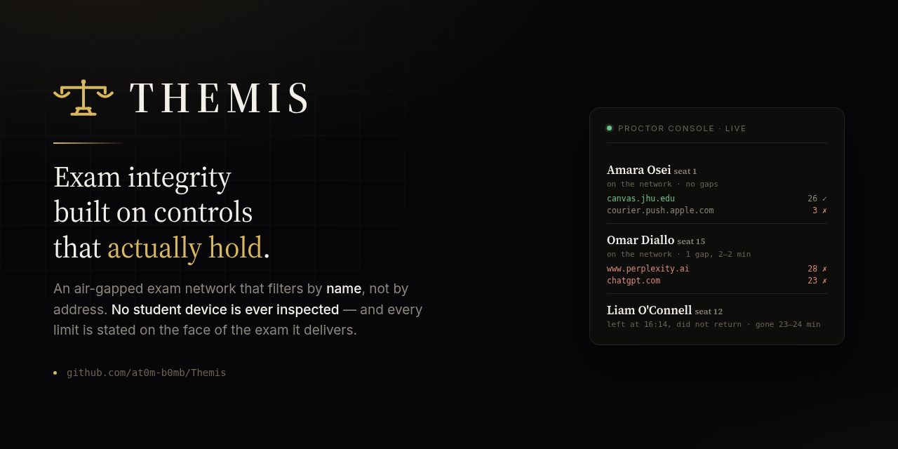

An air-gapped exam network that filters by name, not by address. No student device is ever inspected — and every limit is stated on the face of the exam it delivers.
Commercial proctoring puts controls on the student's own machine, which is the one place they cannot be enforced. A local AI model emits no packets. A phone in a lap is off-machine entirely. An agent on an untrusted laptop can be killed, sandboxed, or fed a fake answer. So the industry ships webcam gaze detection with documented racial bias, flags disabled and neurodivergent students, and buys a signal that does not survive contact with a determined cheater.
Themis moves every control onto hardware the institution owns, and states its limits on the face of every exam it delivers.
Design invariant: no Themis component inspects a student's device. No process enumeration, no filesystem scanning, no camera, no microphone, no screen capture, no keystroke biometrics. Not disabled by default — absent. A capability that exists will be switched on by the first adopter who wants it.
An address allowlist is not a control. A university's Canvas is four rotating CDN addresses shared with every other tenant on that CDN — so pinning them goes stale and lets a student reach those tenants by changing the TLS SNI.
Themis reads the SNI from the handshake, checks the name, then resolves that name itself. The client never chooses the destination address. Point the exam hostname at your own relay and you reach the exam site anyway.
It does not terminate TLS. No certificate, no decryption; the sockets are spliced
byte for byte and the browser validates the real server. And nothing is forwarded —
ip_forward stays 0 and the forward chain is empty, so the
proxy is the only process that egresses. That is why a self-hosted VPN on an arbitrary
address and port has nothing to reach.
No uplink at all. Online lookup, cloud AI, VPN and Tor are not filtered — they are unreachable. The only mode that proves rather than claims.
Only the named sites work; everything else is refused in milliseconds, by name, so it survives the CDN rotating.
The web works except the named sites. Much weaker — a site you did not think of is a site that works.
Two radios bridged under one SSID, 2.4 and 5 GHz, so no device is excluded. Client isolation holds across both.
Per student: whether their device is on the network, any gaps with timestamp bounds rather than false precision, and what the network was asked for.

A student working shows the exam site. A student reaching for an AI tool shows dozens of refusals to one name.
That wording is exact, and the console uses it on screen. The proxy splices TLS without terminating it, so a hostname is the most that can ever be known — the page opened on an allowed site, what was typed into it and what came back are invisible, and no future work here will change that. A tile showing the exam site means the device requested it, not that the student is working; a refusal does not mean anyone tried to cheat, because a phone reaches for iCloud on its own. These are questions worth asking, never answers.
| Route | Verdict | Why |
|---|---|---|
| Online answer lookup | blocked | Refused by name, so it does not go stale when the CDN rotates. |
| Cloud AI | blocked | Their names are not allowlisted; there is no address to pin and none to miss. |
| Self-hosted VPN, any port | blocked | No student packet is ever forwarded. The proxy connects to a name it resolved itself, so an arbitrary address is unreachable even on 443. |
| VPN over TLS with a forged SNI | blocked | The destination address the client chose is discarded. |
| DNS tunnelling | impossible | The resolver has no upstream, so there is no exit. |
| Local AI on their laptop | not blocked | Runs offline and emits no traffic. Invisible to any network control. |
| Phone on cellular | not blocked | Never touches this network. Jamming it violates §333 of the Communications Act — the FCC fined Marriott $600k and Hilton/MC Dean $750k. |
| Collusion inside an allowed site | not blocked | Carried inside a connection you deliberately permitted. |
| Leaving for another network | detected | The radio reports the disassociation. Preventing it would be illegal. |
Those last four are handled by a human in the room and by oral spot-checks — five minutes per student, which at a class of 28 is about 2.5 hours and zero engineering. A student who cannot explain their own answer is caught by the only control that scales against a tool able to write any answer.
git clone https://github.com/at0m-b0mb/Themis.git && cd Themis
sudo apt install -y hostapd dnsmasq nftables iw rfkill
python3 -m unittest discover -s tests # 193 tests, no hardware needed
sudo netguard/linux/bin/themis-ap autoconfigure # detect adapters, assign bands
sudo bash tools/exam-up.sh # radios, DHCP, DNS, firewall, proxy, portal
sudo bash tools/verify_blocking.sh # prove it refuses what you think it doesOr sudo python3 -m themis.operator for a panel on
127.0.0.1:8080 that does all of it with buttons — including a
Refused so far table that turns real traffic into the allowlist.